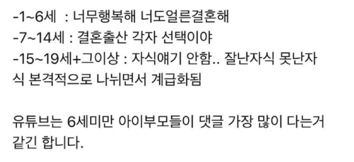

ㅋㅋㅋㅋㅋㅋ 아 선보고 후조치 중요하지 내추럴본 맞노 ㅋㅋㅋ
ㅋㅋㅋㅋㅋ
1~6세는 그저 부모님 껌딱지라서
그저 내 분신의 강아지 같은 애완동물 보는 기분일듯
애 사춘기 될때부턴 애가 내 맘대로 키워지지가 않음.
성적 괜찮게 유지하고, 학폭 했다거나 삐뚤어지지만 않으면 다행
자식나이 30넘어가면 어르신들 자식얘기 금물임ㅋㅋㄱㄱㅋㅋㅋ손주는 커녕 결혼 못한놈들도 가득이라 손주 자랑도 못함ㅋㅋㅋㅋㅋㅋㅋ
ㄹㅇ 옛날은 집마련,취업 쉽고 결혼,출산 필수였어서 자식자랑 필수였는데
이젠 자식농사 성공했어도 주변인들은 아닌사람 다수이니 눈치보여서 잘 안하더라
집에서 밥이나 축내면서 히키코모리처럼 커뮤망생만 안되도 성공ㅋㅋㅋㅋ
으악 멈춰 스플뎀 무엇
ㄷㄷㄷㄷㄷ
사이만 좋으면 대학생 자녀들까지도 얘기 많이 하더라
애기키우는데 넘 행복함…
매일 출근하는 이유가 됨
닉값 ㄷㄷ
애기 몇살인가여
올해 34살에여
징그러
어릴땐 다 이쁘지만 다커도 잘난 자식은 확률적으로 얼마 안되니깐
애새끼가 17살쯤되면 맘커뮤에 애때문에 사는게 너무 고통스럽다는글이 슬슬 올라옴
은근하게 자식자랑 + 손자손녀배틀 + 자식이랑 어디 여행갔다 자랑 + 자식 어디 집해줬다(or 혼자 벌어서 사더라) 자랑
여기서 끝발 밀리면 지는거임. 부모님 은퇴하시고도 치열하게 사시더라.
부모님 친구분들 자녀가 치과의사부터 n년째 자택경비원까지 다양해서 이야기 듣다보면 내 욕빼고 흥미진진함.
그래서 몇년차 자택경비원이신지요

1~6까지 효도로 평생을 키우는게 아닌가 싶기도함
0.5세 키웁니다 힘들어요.
좋기도한데 괴롭기도해요.
애낳는거 권장햇는데 본인 자유인듯합니다..
영유아기보다 말 좀 통하고 같이 할 수 있는게 늘어난 초등이 더 편하고 좋음...
근데 이녀석 중학생 넘어가믄 어찌될지 좀 두렵긴함
딱 아이의 세계관이 부모에게 종속된 순간, 아이가 외부 세상과 접촉한 시기, 생물학적으로 독립한 이후의 시기로 나뉘네
5살인데 이거 찐인듯 우리 개붕이들도 결혼해!!
태어나서 돌 때까지 평생할 효도의 반은 한다
와 소름돋네 ㅋㅋㅋㅋㅋㅋㅋㅋㅋㅋㅋㅋㅋㅋㅋㅋㅋㅋㅋㅋㅋㅋㅋㅋㅋㅋㅋㅋㅋ
이거 비혼하라고 쓴 내용 가져왔네
애 가지면 내가 나올까봐 가질 엄두가 안남
17살 넘기기전에 패죽이게 될거야 분명히
우리딸 7살...
기가막히게 7살되니까 말안듣고 뺀질뺀질 .....
큰애 작은애 14살 10살인데 늘 나한테 가장 큰 스트레스 주는 인물은 마누라임. 애들은 여전히 이뻐죽겠음
역시 딸들이 최고야
독감 조심들해라.. 열보초를 벌써 이주동안 애들 끝나면 내 차례일거같다
유튜브에 1-6세 자랑은 애완동물 브이로그랑 크게 다를바없지
맞아 50일 아기 키우는데 행복해죽음 생각보다 육아도 할만함 결혼바이럴 하고 다니는거 나네
어릴 때 기억으로 평생을 키운다자너ㅋㅋㅋ그런거지
그놈 내추럴본 공무원인게 같이 피씨방갔을때 모니터뒤에 어댑터 폭발하고 피씨방 정전되고 그와중에 그친구 모니터 뒤에서 불나고 있는데
나한테 야 이거 불낫다 이지랄하는거야 시발 보고할께아니라 불부터 꺼야지 씹새얔ㅋㅋ하고 대충 후후 불어서 끄고 튀었슴